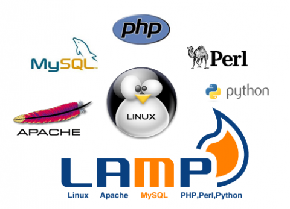

Instalar y configurar LAMP en Centos 6 PHP-FPM
Hace poquito tiempo estuve configurando un webserver desde cero así que aprovecho para armar una guia "paso a paso" de cómo instalar un Centos con LAMP (Linux,Apache,MySQL,PHP|Perl??|Python:) con algunas caracteristicas que me gusta usar. Me queda registro de la instalación y de paso comparto el how to.
En primer lugar dejo nota de algo que no quiero olvidarme. El servidor que instale era un IBM x3250 M4. Este server tiene el firmware UEFI y me hizo renegar bastante con 2 cosas unas cuantas horas. Creo que el último server físico que había instalado fue en el 2011. Estar con poco entrenamiento seguro que me trajo estos problemas :D.
La configuración del RAID no está en el BIOS sino que hay que dejar que el equipo este a punto de arrancar e ingresar a una herramienta especifica con ctrl+h. Esto es realmente feo, porque si entras a la config del BIOS te deja seleccionar RAID y al próximo restart tenés un menú "storage" que lo único que te detecta es la lectora DVD. Ahora el problema: El cd "minimal" de Centos tiene un error con UEFI. Por lo tanto no bootea (desde CD con un pendrive fue imposible directamente). Para solucionarlo utilice el workaround del primer comentario.
"it, I just edited the grub menu item at boot, to load the kernel from /isolinux instead of /images/pxeboot."
SALVADOR!
Instalar apache, mysql y PHP
(usando el repo 'remi' que tiene versiones un poco más nuevas que el oficial.)
yum --enablerepo=remi install httpd mysql mysql-server php php-common yum --enablerepo=remi install php-mysql php-gd php-mbstring php-mcrypt php-xml php-pecl-apc php-cli php-pear php-pdo
/usr/bin/mysqladmin -u root password 'algocomplejo' /usr/bin/mysql_secure_installation
Marcar los 2 servicios para que levanten al inicio
chkconfig --levels 235 httpd on chkconfig --levels 235 mysqld on
Con esto ya tenemos todo funcionando. Para mejor performance voy a cambiar el manejador de php por PHP-FPM. Detalles en http://php-fpm.org/
yum --enablerepo=remi install php-fpm chkconfig --levels 235 php-fpm on
Editar /etc/php-fpm.d/www.conf
;listen = 127.0.0.1:9000 listen = /tmp/php5-fpm.sock pm.status_path = /status ping.path = /ping
Luego hay que Instalar mod_fastcgi
yum --enablerepo=remi install mod_fastcgi
Deshabilitar mod_php
mv /etc/httpd/conf.d/php.conf php.conf.disable
Para la config que sigue abajo hay que crear el directorio "/usr/lib/cgi-bin/". Editar el archivo /etc/httpd/conf.d/fastcgi.conf para que quede de la siguiente manera:
<IfModule mod_fastcgi.c> DirectoryIndex index.php index.html index.shtml index.cgi AddHandler php5-fcgi .php Action php5-fcgi /php5-fcgi Alias /php5-fcgi /usr/lib/cgi-bin/php5-fcgi FastCgiExternalServer /usr/lib/cgi-bin/php5-fcgi -socket /tmp/php5-fpm.sock -pass-header Authorization # For monitoring status with e.g. Munin <LocationMatch "/(ping|status)"> SetHandler php5-fcgi-virt Action php5-fcgi-virt /php5-fcgi virtual </LocationMatch> </IfModule>
Done! Faltaría configurar los vhosts, etc pero eso es standard.
Comentarios
Comments powered by Disqus